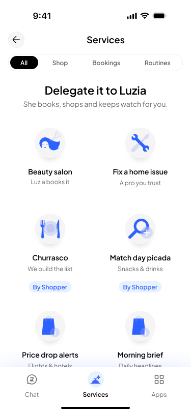
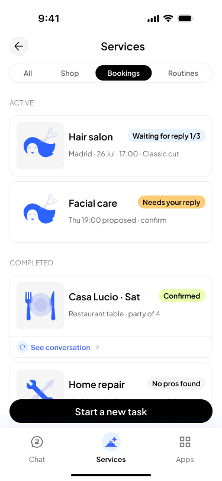
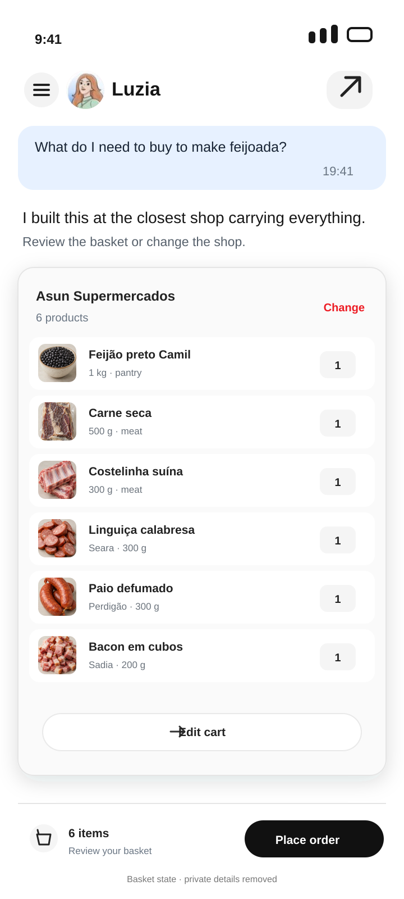
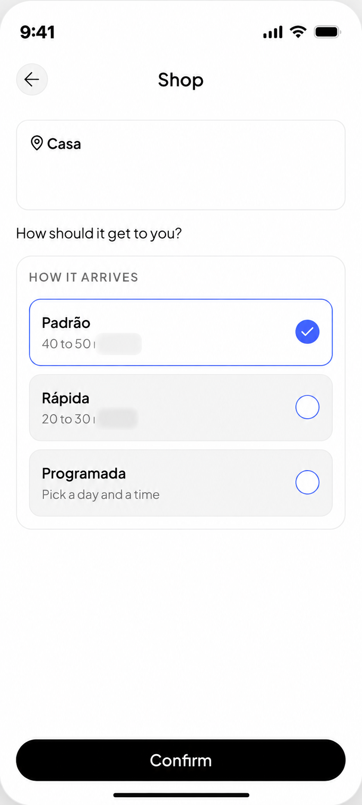

Felipe Amorim
Felipe AmorimOne home for everything the assistant does.
A shared destination for bookings, shopping and ongoing routines, designed to make each capability easier to find and easier to extend.

One service area. Different jobs, clear next steps.
From the hub, people can manage a booking, build a grocery basket and choose how it arrives. Each screen makes the next useful action visible.


Move from a useful list to a delivery choice.
The assistant builds a product basket from the conversation, then keeps the delivery decision in the same task. This partner integration is still in build.

Many capabilities. No shared place to find them.
Bookings, shopping and ongoing services had grown across different parts of the assistant. The hub brings them together in a structure people can browse and return to.
Give different jobs their own shape.
Bookings, commerce and routines follow distinct patterns within one service area. This keeps one-off tasks separate from work that continues in the background, while giving partners a consistent place in the experience.
Compose useful results from shared parts.
Routine results use reusable content blocks, so a flight update, receipt or briefing can fit the task without becoming a new bespoke screen.
Let a service earn its next layer.
A category with a single available task takes people straight to it. A second level appears when there is enough to browse, so navigation earns its place instead of adding a stop.